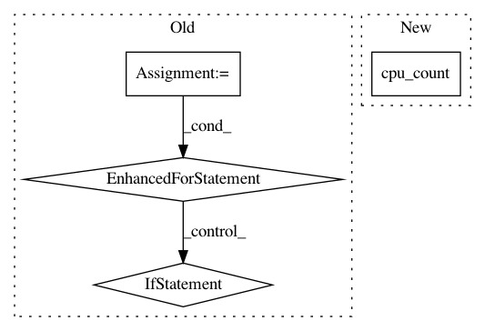

e3e8325a271b157d6f39d8c1332fcddbdcde88da,src/footprints_to_shapes.py,,create_footprints,#,14
Before Change
else:
surface = chunk.point_cloud
for camera in chunk.cameras:
if camera.type != Metashape.Camera.Type.Regular or not camera.transform:
continue // skipping NA cameras
sensor = camera.sensor
corners = list()
for i in [[0, 0], [sensor.width - 1, 0], [sensor.width - 1, sensor.height - 1], [0, sensor.height - 1]]:
corners.append(surface.pickPoint(camera.center, camera.unproject(Metashape.Vector(i))))
if not corners[-1]:
corners[-1] = chunk.point_cloud.pickPoint(camera.center, camera.unproject(Metashape.Vector(i)))
if not corners[-1]:
break
corners[-1] = chunk.crs.project(T.mulp(corners[-1]))
if not all(corners):
print("Skipping camera " + camera.label)
continue
if len(corners) == 4:
shape = chunk.shapes.addShape()
shape.label = camera.label
shape.attributes["Photo"] = camera.label
shape.type = Metashape.Shape.Type.Polygon
shape.group = footprints
shape.vertices = corners
shape.has_z = True
Metashape.app.update()
print("Script finished!")
After Change
shape.vertices = corners
shape.has_z = True
with concurrent.futures.ThreadPoolExecutor(multiprocessing.cpu_count()) as executor:
executor.map(lambda camera: process_camera(chunk, camera), chunk.cameras)
Metashape.app.update()
In pattern: SUPERPATTERN
Frequency: 3
Non-data size: 4
Instances
Project Name: agisoft-llc/metashape-scripts
Commit Name: e3e8325a271b157d6f39d8c1332fcddbdcde88da
Time: 2020-03-19
Author: polarnick@agisoft.com
File Name: src/footprints_to_shapes.py
Class Name:
Method Name: create_footprints
Project Name: rusty1s/pytorch_geometric
Commit Name: 17e56b9100275068c7ad0e74c0bf247866da846f
Time: 2020-05-31
Author: j-magnusson@t-online.de
File Name: torch_geometric/utils/geodesic.py
Class Name:
Method Name: geodesic_distance
Project Name: rusty1s/pytorch_geometric
Commit Name: cce4382f73d0976fb94b003949acd668377a0869
Time: 2020-04-03
Author: j-magnusson@t-online.de
File Name: torch_geometric/utils/geodesic.py
Class Name:
Method Name: geodesic_distance